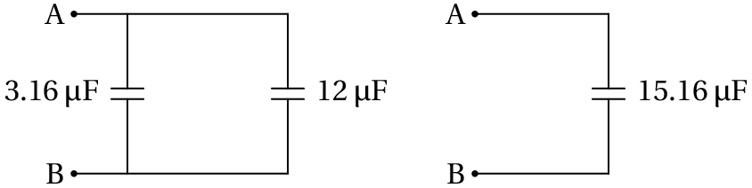

Em 1745, o holandês Pieter van Musschenbroek inventou o primeiro condensador. Enquanto usava uma garrafa de vidro para isolar uma lâmina metálica no seuinterior, descobriu que quando segurava a garrafa na mão, a carga elétrica que conseguia armazenar na lâmina era muito maior do que quando a garrafa estava sobre a mesa. A explicação é que na mão, que é um condutor, são induzidas cargas de sinal contrário que atraem as cargas no metal, permitindo que seja mais fácil introduzir mais cargas do mesmo sinal. Colocando uma segunda lâmina metálica por fora da garrafa, facilita-se a entrada de cargas na garrafa, podendo ser armazenadas cargas muito elevadas. O condensador de van Musschenbroek ficou conhecido como garrafa de Leiden, que é a cidade onde trabalhou. Trata-se de uma das invenções mais importantes da história da eletricidade, que permitiu acumular cargas maiores, facilitando a realização de experiências de eletrostática.
O potencial num condutor isolado é uniforme em todo o condutor e proporcional à carga total nele. Define-se a capacidade do condutor como a razão entre a carga e o potencial na superfície do condutor
A capacidade não depende da carga nem do potencial, pois os dois aumentam na mesma proporção; a capacidade depende unicamente da forma e tamanho do condutor. O potencial é realmente a diferença de potencial entre a superfície do condutor e um ponto no infinito, onde costuma arbitrar-se potencial igual a zero.
No sistema internacional de unidades, a unidade para medir capacidade elétrica é o farad, em homenagem ao cientista Michael Faraday (1791–1867). O farad, representado pela letra F, é a capacidade de um condutor que, com uma carga de 1 C, tem um potencial de 1 V:
Uma capacidade de 1 F é muito elevada, sendo comum encontrarem-se na prática capacidades da ordem de 1 µF, 1 nF ou 1 pF.
Figura 4.1: Esfera condutora.
Numa esfera condutora isolada (figura 4.1), toda a carga se acumula na superfície, de forma uniforme, devido à simetria da esfera. No apêndice B mostra-se como calcular o campo elétrico e o resultado é que, dentro da esfera o campo é nulo e fora dela o campo é idêntico ao campo de uma carga pontual colocada no centro da esfera. O módulo do campo elétrico num ponto que se encontra a uma distância do centro da esfera é:
onde é a constante de Coulomb (9.00×109 N·m2/C2) e é a constante dielétrica do meio à volta da esfera. A figura 4.2 mostra o gráfico do módulo do campo em função da distância até o centro, no caso em que a carga é positiva.
Para calcular integra-se a componente tangencial do campo elétrico, desde a superfície da esfera até o infinito, ao longo de qualquer percurso; um percurso que facilita o cálculo é na direção e sentido radial, que é a direção das linhas de campo elétrico:
O valor deste integral é também igual à área sombreada na figura 4.2. Usando a expressão obtida para , encontra-se a expressão para a capacidade da esfera de raio ,
Observe-se que se for negativa, deveria ser substituída por mas o resultado do integral na equação 4.4 é o mesmo porque, nesse caso, o sentido do campo seria oposto ao sentido radial, introduzindo outro sinal negativo. O potencial na superfície, em relação ao infinito, tem sempre o mesmo sinal da carga e, como tal, a capacidade é sempre um número positivo.
Quanto maior for a esfera, maior será a sua capacidade. Já se referiu anteriormente que a capacidade não depende da carga armazenada na esfera, nem do potencial produzido por essa carga. A capacidade depende apenas do tamanho e da forma geométrica do condutor e da constante dielétrica do meio. Neste caso é diretamente proporcional ao raio da esfera e à constante dielétrica do meio.
Na abertura do capítulo mencionou-se a garrafa de Leiden, que foi o primeiro condensador construído na história. Os dois condutores separados por um isolador (neste caso vidro), designam-se de armaduras. Quando existem cargas numa das armaduras são induzidas cargas de sinal contrário na outra armadura, o que faz diminuir o potencial de cada armadura em relação ao potencial de referência (a terra). A diminuição do potencial do sistema de duas armaduras, comparado com o potencial que teria uma única armadura com a mesma carga, implica uma capacidade muito maior para o condensador em comparação com a capacidade de cada uma das duas armaduras por separado.
Se uma das armaduras tiver carga a outra tem carga . Se for a voltagem entre as duas armaduras, define-se a capacidade do condensador como:
Se entre as duas armaduras é colocado um isolador, a constante de coulomb, , que entra no cálculo da diferença de potencial , a partir da força, é substituída por , onde é a constante dielétrica do isolador. Como tal, com o isolador a capacidade do condensador aumenta de um fator . Assim, na garrafa de Leiden a garrafa de vidro serve de isolador e ajuda a aumentar a capacidade. Como o vidro tem uma constante dielétrica de perto de 6, a capacidade com a garrafa de vidro é cerca de 6 vezes a que se obtinha sem vidro entre as armaduras.
Quanto maior a capacidade de um condensador, mais fácil é armazenar cargas nele. Existem vários modelos diferentes de condensadores, com diferentes formas e tamanhos (figura 4.3).

O isolador entre as armaduras de um condensador também se chama dielétrico. O dielétrico também ajuda a aumentar a diferença de potencial máxima que pode existir entre as armaduras. Cada material isolador tem um valor da rigidez dielétrica ( ) que é o campo elétrico máximo que suporta o dielétrico sem se produzir rutura. A rutura de um dielétrico ocorre quando as suas moléculas ou átomos são deformadas a tal ponto, que algumas delas são ionizadas, formando-se fendas onde o material está queimado e passa a ser condutor por causa dos iões depositados nessa fendas. A figura 4.4 mostra um bloco de acrílico que foi colocado entre duas armaduras com uma voltagem elevada, ultrapassando a rigidez dielétrica do acrílico, produzindo a sua rutura. As fendas onde o dielétrico foi queimado criam as chamadas figuras de Lichtenberg
A diferença de potencial máxima que suporta um condensador com dielétrico de espessura sem se queimar é então,
onde é a rigidez do dielétrico. Diferentes modelos de condensadores (figura 4.3) têm diferentes capacidades e diferenças de potencial máximas, conforme o tamanho e o dielétrico utilizado. Em algumas aplicações também é importante que o tempo de resposta do dielétrico seja rápido, já que as cargas não são induzidas nas moléculas do dielétrico de forma instantânea. A tabela 4.1 indica a constante dielétrica e a rigidez dielétrica de vários materiais isoladores.
| Material | Constante dielétrica, | Rigidez, (kV/mm) |
|---|---|---|
| Água (20 °C) | 80 | — |
| Ar seco | 1.00059 | 3 |
| Óleo | 2.24 | 12 |
| Papel | 3.7 | 16 |
| Acrílico | 3.4 | 40 |
| Vidro pirex | 5.6 | 14 |
| Porcelana | 7 | 5.7 |
| Poliéster | 2.55 | 24 |
| Parafina | 2.1– 2.5 | 10 |
A rigidez dielétrica do ar seco é 3 kV/mm. Quando a diferença de potencial entre dois objetos no ar ultrapassa 3000 V por milímetro de afastamento, dá-se uma descarga elétrica abrupta dos objetos. As forças elétricas elevadas ionizam as moléculas do ar, e a descarga é a passagem de iões positivos e negativos do ar entre os dois objetos.
As nuvens e a terra, que são condutores, atuam como as armaduras de um condensador, sendo o ar o dielétrico. Durante uma trovoada, a humidade do ar faz diminuir a rigidez dielétrica do ar e a diferença de potencial máxima entre as nuvens e a terra diminui, existindo a possibilidade de surgirem descargas elétricas (figura 4.5). Quanto mais perto das nuvens estiverem os objetos apoiados no chão, maior será a probabilidade de serem atingidos por um raio, porque é então menor.
Figura 4.6: Condensador esférico.
A figura 4.6 mostra um condensador esférico, formado por duas armaduras esféricas concêntricas, de raios e , separadas por um isolador de constante dielétrica que ocupa o espaço entre as duas esferas. A esfera menor está ligada a um fio que passa para fora da esfera maior, sem tocá-la, de forma a poder-se armazenar uma carga numa das esferas e na outra.
O campo produzido pelas duas esferas condutoras é dado pela expressão obtida no apêndice B, substituindo por e por na equação B.14. Como a soma das duas cargas é zero, o campo fora das duas esferas é nulo. O campo elétrico está confinado à região entre as duas esferas, onde existe o dielétrico que as separa. A expressão do campo (admitindo que é positiva) é,
E a diferença de potencial entre as esferas é o integral do campo, no sentido radial, entre as duas esferas:
Dividindo a carga, , pela diferença de potencial, , obtém-se a expressão para a capacidade do condensador esférico:
Um condensador plano é formado por duas armaduras planas, de área , paralelas e separadas por uma distância constante , como no lado esquerdo da figura 4.7. Se as armaduras estão suficientemente próximas uma boa aproximação consiste em considerar o condensador plano como uma pequena parte num condensador esférico, com um raio muito grande, aproximando-se de infinito, e as duas esferas aproximadamente com o mesmo raio, como mostra a figura 4.7.
A carga e a área no condensador esférico muito grande aproximam-se de infinito, mas a relação entre elas, carga superficial, permanece finita. A equação 4.8 para o campo dentro do condensador esférico deve ser escrita em função da carga superficial, , e com igual a para obter o campo na vizinhança da esfera; o campo dentro do condensador plano e então, aproximadamente:
E a diferença de potencial entre as armaduras é igual a
onde é a distância entre as armaduras, a carga na armadura positiva e a área das armaduras. A partir da equação 4.6 obtém-se a expressão para a capacidade do condensador plano:
A capacidade de um condensador plano é diretamente proporcional à constante dielétrica e à área das armaduras e inversamente proporcional à distância entre elas.
Um condensador variável é constituído por duas placas planas paralelas com forma de setor circular de ângulo 80° e raio 5 cm, que podem rodar à volta de um eixo comum, como mostra a figura. Se a distância entre as placas é 0.5 cm, calcule a capacidade máxima e a capacidade quando uma das placas roda 30° a partir da posição onde a capacidade é máxima.
Resolução. A capacidade máxima obtém-se quando as duas placas estão completamente sobrepostas uma acima da outra, de forma que a carga se distribui ao longo de toda a superfície das placas. O ângulo de 80° equivale a uma fração 80/360 do círculo completo; portanto, a área das armaduras é:
A capacidade é dada pela expressão 4.13, com a constante dielétrica do ar, :
Quando uma das placas roda 30°, a área na qual a carga se distribui, corresponde apenas à área da parte das placas que se encontra sobreposta, ou seja, um setor circular de ângulo 50°. A área é então 5/8 da área total das armaduras e a capacidade, sendo diretamente proporcional à área, é 5/8 da capacidade máxima:
Um condensador pode cumprir uma função semelhante à de uma bateria, já que pode ser usado para armazenar cargas que são fornecidas a um circuito. A grande vantagem é que, como não há reações químicas envolvidas, a carga e descarga podem ser feitas muito rapidamente e o condensador não fica inutilizado após várias cargas e descargas, que é o que acontece a uma bateria recarregável. Imagine por exemplo que em vez de ter que esperar algumas horas para recarregar a bateria do telemóvel, esta ficasse imediatamente recarregada quando fosse ligada à tomada, e que nunca tivesse que trocá-la por uma nova. Isso está cada vez mais perto de ser uma realidade, com o desenvolvimento dos ultracondensadores.
A dificuldade em usar um condensador normal como fonte é que à medida que o condensador descarrega, a diferença de potencial entre as suas armaduras decresce rapidamente. Uma desvantagem ainda maior é que a capacidade de armazenar carga não é tão elevada como nas baterias. Considere-se por exemplo a pilha recarregável no problema 4 do capítulo 2. O valor da f.e.m. é 1.2 V e a carga máxima armazenada é de 2300 mA·h = 8.28 kC. De acordo com a equação 4.6, seria necessário um condensador de 6.9 kF para armazenar essa carga, com essa diferença de potencial.
Uma capacidade tão elevada era algo impensável, até finais do século passado. Um condensador tradicional, do tamanho dessa pilha, teria uma capacidade da ordem dos µF. Os condensadores eletrolíticos atinge capacidades superiores, mas ainda aquém dos quilo-farad. Recentemente têm sido produzidos ultracondensadores, com capacidades muito mais elevadas, na ordem dos quilo-farad (figura 4.8).
Por exemplo, o ultracondensador cilíndrico situado à frente na figura 4.8, tem uma capacidade de 3000 farads a 2.7 volts. Com esses valores, a carga que se consegue armazenar é de 8.1 kC já muito próximo da carga de uma pilha recarregável. A capacidade elevada também implica que demora muito mais a descarregar quando é ligado a um circuito. Ainda falta reduzir um pouco o tamanho para que seja competitivo com as atuais baterias de iões de lítio.
Nos ultracondensadores usa-se um meio poroso para substituir uma das armaduras. A área de contacto entre elétrodos e eletrólito é muito elevada. Os ultracondensadores são já utilizados em combinação com os motores elétricos dos automóveis que funcionam a hidrogénio com células de combustível (figura 4.9) e que já estão a ser comercializados em alguns países.
O ultracondensador permite acumular rapidamente as cargas produzidas pelas células de combustível ou pelos travões eletromagnéticos, e essa carga pode ser fornecida rapidamente, nos momentos em que é necessário acelerar. As únicas reações químicas produzidas nesse tipo de veículo é a combinação do hidrogénio com o oxigénio nas células de combustível, que produz vapor de água. Não são libertados gases nocivos para a atmosfera, nem existem baterias a produzir produtos químicos corrosivos.
Os ultracondensadores podem fornecer carga e serem recarregados muito mais rapidamente do que uma bateria e sem sofrer o desgaste que faz com que a bateria tenha um número limitado de ciclos de carga e descarga.
Para carregar um condensador, é necessário carregar uma das armaduras com carga e a outra com carga . O processo implica uma transferência de carga de uma armadura para a outra. Essa passagem pode ser feita por ligação de dois cabos nas armaduras e nos terminais de uma bateria (figura 4.10).
Para determinar a energia fornecida pela bateria nesse processo, imaginemos que a carga total foi transferida em pequenas cargas infinitesimais desde uma das armaduras até a outra, como indica a figura 4.10. Cada vez que uma carga passa da armadura negativa para a positiva, ganha uma energia potencial elétrica
A energia total armazenada no condensador obtem-se por integração, desde , até (área sob a reta no gráfico de em função de , na figura4.11). O resultado é:
Usando a equação 4.6, que relaciona a carga e a diferença de potencial em qualquer condensador, a equação anterior pode ser escrita em outras duas formas alternativas:
A carga não é transferida para as armaduras de forma instantânea. Quando se liga um condensador a uma fonte, a carga aumenta gradualmente até uma carga final. O processo de aumento da carga com o tempo denomina-se resposta transitória do condensador; se a resistência entre a fonte e as armaduras do condensador não for muito elevada, a resposta transitória é extremamente rápida e pode-se admitir que a carga no condensador já tem o seu valor final estável. No capítulo sobre processamento de sinais mostra-se como determinar a resposta transitória.
Um sistema de condensadores pode ser substituido por um único condensador equivalente. Nos casos em que os condensadores são ligados em série ou em paralelo, é fácil calcular a capacidade do condensador equivalente.
A figura 4.12 mostra dois condensadores ligados em série, entre os pontos A e B. Se os condensadores estiverem inicialmente descarregados, ao introduzir uma diferença de potencial entre os pontos A e B, circula uma carga que entra pelo ponto a maior potencial (A na figura) e sai pelo ponto a menor potencial. Na região central, que liga as duas armaduras comuns aos dois condensadores, são induzidas cargas e (a carga total nessa região é nula). Assim, a carga armazenada em cada um dos condensadores é idêntica.
A diferença de potencial entre os pontos A e B é a soma das diferenças de potencial em cada um dos condensadores:
O sistema é então equivalente a um único condensador cuja capacidade satisfaz a equação:
O valor da carga armazenada no condensador equivalente é o mesmo que em cada um dos condensadores em série.
A figura 4.13 mostra um sistema de dois condensadores ligados em paralelo entre dois pontos A e B. A diferença de potencial é sempre igual nos dois condensadores, e igual à diferença de potencial entre os pontos A e B.
Se os condensadores estiverem inicialmente descarregados, no momento em que é introduzida uma diferença de potencial entre os pontos A e B, entra carga positiva nas armaduras que estiverem ligadas ao ponto com maior potencial, e sai a mesma quantidade de carga das armaduras ligadas ao ponto com menor potencial. Mas a quantidade de carga que entra em cada condensador não tem que ser a mesma; a carga total que entra e sai entre os pontos A e B é:
Ou seja, o sistema é equivalente a um único condensador com capacidade igual à soma das capacidades dos dois condensadores:
Considere o circuito representado na figura e calcule: (a) A capacidade equivalente entre A e B. (b) A carga armazenada em cada condensador quando a voltagem entre A e B for V. (c) A energia total armazenada no circuito quando V.
Resolução. Os condensadores de 4 µF e 15 µF encontram-se em série e, portanto, podem ser substituídos por um só condensador de capacidade:
este condensador está ligado em paralelo com o condensador de 12 µF, pelo que a capacidade total é 15.16 µF.
Nos dois condensadores de 12 µF e 3.16 µF a voltagem é a mesma e é igual a 200 V; assim sendo, as cargas nesses condensadores são:
As cargas nos condensadores de 4 µF e 15 µF são iguais porque eles estão ligados em série:
A energia total armazenada pode ser calculada somando as energias armazenadas em cada um dos condensadores; a resposta deve ser a mesma em qualquer dos circuitos equivalentes. Usando o circuito mais simples, com um só condensador de 15.16 µF, obtém-se:
(Para conferir a sua resposta, clique nela.)
Perguntas: 1. E. 2. C. 3. A. 4. D. 5. C.
Problemas
Quanto maior for o tamanho de um condutor, maior será a sua capacidade de armazenar carga.
(clique para continuar)
J/C são unidades de energia por unidade de carga, enquanto que a capacidade tem unidades de carga por unidade de potencial.
(clique para continuar)
Esse trabalho é igual ao potencial na superfície do condutor vezes a carga; para obter a capacidade do condutor é necessário dividir a carga na superfície pelo potencial na superfície.
(clique para continuar)
O potencial na superfície aumenta na mesma proporção que a carga acumulada; a capacidade, obtida dividindo a carga pela diferença de potencial, resulta então independente da carga e do potencial na superfície.
(clique para continuar)
A capacidade é igual à carga desse número de eletrões, dividida pela diferença de potencial de 9 V.
(clique para continuar)
A capacidade é igual à carga desse número de eletrões, dividida pela diferença de potencial de 9 V.
(clique para continuar)
A capacidade é igual à carga desse número de eletrões, dividida pela diferença de potencial de 9 V.
(clique para continuar)
A capacidade é igual à carga desse número de eletrões, dividida pela diferença de potencial de 9 V.
(clique para continuar)
A capacidade é igual à carga desse número de eletrões, dividida pela diferença de potencial de 9 V.
(clique para continuar)
A capacidade é igual à área de uma das armaduras (área do círculo com 5 cm de raio) dividida por , onde é a constante de Coulomb e a distância entre as duas armaduras.
(clique para continuar)
A capacidade é igual à área de uma das armaduras (área do círculo com 5 cm de raio) dividida por , onde é a constante de Coulomb e a distância entre as duas armaduras.
(clique para continuar)
A capacidade é igual à área de uma das armaduras (área do círculo com 5 cm de raio) dividida por , onde é a constante de Coulomb e a distância entre as duas armaduras.
(clique para continuar)
A capacidade é igual à área de uma das armaduras (área do círculo com 5 cm de raio) dividida por , onde é a constante de Coulomb e a distância entre as duas armaduras.
(clique para continuar)
A capacidade é igual à área de uma das armaduras (área do círculo com 5 cm de raio) dividida por , onde é a constante de Coulomb e a distância entre as duas armaduras.
(clique para continuar)
A carga aumenta num fator de 3. A capacidade diminui num fator 1/3, porque a distância aumenta 3 vezes e, portanto, a diferença de potencial aumenta num fator de 9 (diferença de potencial é igual a carga sobre capacidade). Com esses resultados calcula-se o aumento da energia .
(clique para continuar)
A carga aumenta num fator de 3. A capacidade diminui num fator 1/3, porque a distância aumenta 3 vezes e, portanto, a diferença de potencial aumenta num fator de 9 (diferença de potencial é igual a carga sobre capacidade). Com esses resultados calcula-se o aumento da energia .
(clique para continuar)
A carga aumenta num fator de 3. A capacidade diminui num fator 1/3, porque a distância aumenta 3 vezes e, portanto, a diferença de potencial aumenta num fator de 9 (diferença de potencial é igual a carga sobre capacidade). Com esses resultados calcula-se o aumento da energia .
(clique para continuar)
A carga aumenta num fator de 3. A capacidade diminui num fator 1/3, porque a distância aumenta 3 vezes e, portanto, a diferença de potencial aumenta num fator de 9 (diferença de potencial é igual a carga sobre capacidade). Com esses resultados calcula-se o aumento da energia .
(clique para continuar)
A carga aumenta num fator de 3. A capacidade diminui num fator 1/3, porque a distância aumenta 3 vezes e, portanto, a diferença de potencial aumenta num fator de 9 (diferença de potencial é igual a carga sobre capacidade). Com esses resultados calcula-se o aumento da energia .
(clique para continuar)
A capacidade equivalente é igual à soma das capacidades, ou seja, maior que cada uma das duas capacidades.
(clique para continuar)
A diferença de potencial é a mesma nos dois condensadores. Como a carga é o produto da diferença de potencial e da capacidade, as duas cargas só seriam iguais se as capacidades fossem iguais.
(clique para continuar)
Como as diferenças de potencial nos dois condensadores são iguais, as cargas serão diretamente proporcionais às capacidades e, portanto, maior no condensador com maior capacidade.
(clique para continuar)
Em quaisquer dois dispositivos ligados em paralelo, a diferença de potencial é sempre igual neles.
(clique para continuar)
Em quaisquer dois dispositivos ligados em paralelo, a diferença de potencial é sempre igual neles.
(clique para continuar)
Quando se coloca um dielétrico à volta a capacidade aumenta, em vez de diminuir.
(clique para continuar)